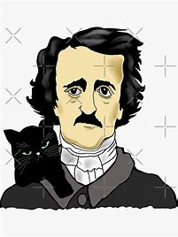

Biografía de Edgar Allan Poe
Edgar Allan Poe nació el 19 de enero de 1809 en Boston, Massachusetts. Fue un escritor, poeta, crítico y editor estadounidense, considerado una figura central en el desarrollo del género de la literatura de terror y de la literatura de detectives.
Poe vivió una vida marcada por la tragedia desde muy joven. Su padre abandonó a la familia cuando era un niño y su madre murió de tuberculosis cuando él tenía apenas tres años. Fue criado por una pareja de adultos, pero nunca fue adoptado oficialmente. Esta falta de estabilidad familiar influyó profundamente en su obra posterior.
A lo largo de su vida, Poe tuvo numerosos trabajos, pero su verdadera pasión siempre fue la escritura. En sus primeros años, se destacó como poeta y su obra "El cuervo" se convirtió en uno de sus poemas más reconocidos y populares. También escribió numerosos cuentos cortos, muchos de los cuales se han convertido en clásicos de la literatura de terror, como "La caída de la Casa Usher" o "El gato negro".
A pesar de su talento como escritor, Poe luchó con problemas económicos y adicciones a lo largo de su vida. Su consumo excesivo de alcohol y drogas le causó problemas de salud y a menudo estaba en conflictos con amigos y colegas.
Poe también se destacó como crítico literario y editor. Fue conocido por sus críticas ácidas y polémicas de otros escritores y su estilo de edición meticuloso. También fundó varias revistas literarias, pero ninguna tuvo éxito financiero duradero.
En 1849, a la edad de 40 años, Poe murió en circunstancias misteriosas. La causa exacta de su muerte nunca se ha determinado, aunque se cree que fue el resultado de sus problemas de salud y sus adicciones.
A pesar de su vida corta y turbulenta, el legado de Edgar Allan Poe perdura hasta el día de hoy. Su obra ha influido en una gran cantidad de escritores y su estilo único y oscuro lo convierten en una figura inolvidable de la literatura. Sus historias macabras y su poesía melancólica continúan fascinando a los lectores y su nombre sigue siendo sinónimo de terror y misterio.
Principales Obras de Edgar Allan Poe
El cuervo
Es uno de los poemas más famosos de Poe. Cuenta la historia de un hombre que, atormentado por la muerte de su amada, es visitado por un cuervo que repite la palabra "Nunca más" de manera incesante. El poema explora temas como la muerte, la tristeza y la pérdida, y se caracteriza por su uso de la melancolía y el simbolismo.
La caída de la casa usher
Es un relato de suspense y terror que narra la visita de un narrador sin nombre a la mansión de la familia Usher, donde descubre una serie de eventos extraños y perturbadores. La atmósfera del relato es opresiva y claustrofóbica, y se centra en temas como la locura, la debilidad mental y las enfermedades hereditarias.
Los crímenes de la calle Morgue
Es considerado uno de los primeros relatos detectivescos de la historia de la literatura. El relato sigue al detective aficionado C. Auguste Dupin mientras investiga el brutal asesinato de dos mujeres en París. Dupin utiliza su agudo poder de observación y deducción para resolver el caso, desafiando las teorías convencionales de la época. Este relato sentó las bases del género detectivesco y ha influido en numerosos autores posteriores.
Biografía
Edgar Allan Poe (19 de enero de 1809 - 7 de octubre de 1849) fue un escritor, poeta, crítico y periodista romántico estadounidense. Es conocido por sus cuentos de terror y misterio, así como por ser considerado el inventor del género de la novela policial. Algunas de sus obras más famosas incluyen "El cuervo", "Los crímenes de la calle Morgue" y "El gato negro".
Biografía de Edgar Allan Poe
Edgar Allan Poe nació el 19 de enero de 1809 en Boston, Massachusetts. Fue un escritor, poeta crítico y editor estadounidense, considerado una figura central en el desarrollo del género de la literatura de terror y de la literatura de detectives.
Poe vivió una vida marcada por la tragedia desde muy joven. Su padre abandonó a la familia cuando era un niño y su madre murió de tuberculosis cuando él tenía apenas tres años. Fue criado por una pareja de adultos, pero nunca fue adoptado oficialmente. Esta falta de estabilidad familiar influyó profundamente en su obra posterior.
A lo largo de su vida, Poe tuvo numerosos trabajos, pero su verdadera pasión siempre fue la escritura. En sus primeros años, se destacó como poeta y su obra "El cuervo" se convirtió en uno de sus poemas más reconocidos y populares. También escribió numerosos cuentos cortos, muchos de los cuales se han convertido en clásicos de la literatura de terror, como "La caída de la Casa Usher" o "El gato negro".
A pesar de su talento como escritor, Poe luchó con problemas económicos y adicciones a lo largo de su vida. Su consumo excesivo de alcohol y drogas le causó problemas de salud y a menudo estaba en conflictos con amigos y colegas.
Poe también se destacó como crítico literario y editor. Fue conocido por sus críticas ácidas y polémicas de otros escritores y su estilo de edición meticuloso. También fundó varias revistas literarias, pero ninguna tuvo éxito financiero duradero.
En 1849, a la edad de 40 años, Poe murió en circunstancias misteriosas. La causa exacta de su muerte nunca se ha determinado, aunque se cree que fue el resultado de sus problemas de salud y sus adicciones.
A pesar de su vida corta y turbulenta, el legado de Edgar Allan Poe perdura hasta el día de hoy. Su obra ha influido en una gran cantidad de escritores y su estilo único y oscuro lo convierten en una figura inolvidable de la literatura. Sus historias macabras y su poesía melancólica continúan fascinando a los lectores y su nombre sigue siendo sinónimo de terror y misterio.
Citas famosas de Edgar Allan Poe
"Todos deberíamos perder la cordura de vez en cuando. La locura es el único modo de mantenernos cuerdos."
Edgar Allan Poe
"Las tinieblas y la corrupción son las únicas cosas que tienen vida eterna en este mundo."
Edgar Allan Poe
"No hay belleza sin melancolía."
Edgar Allan Poe